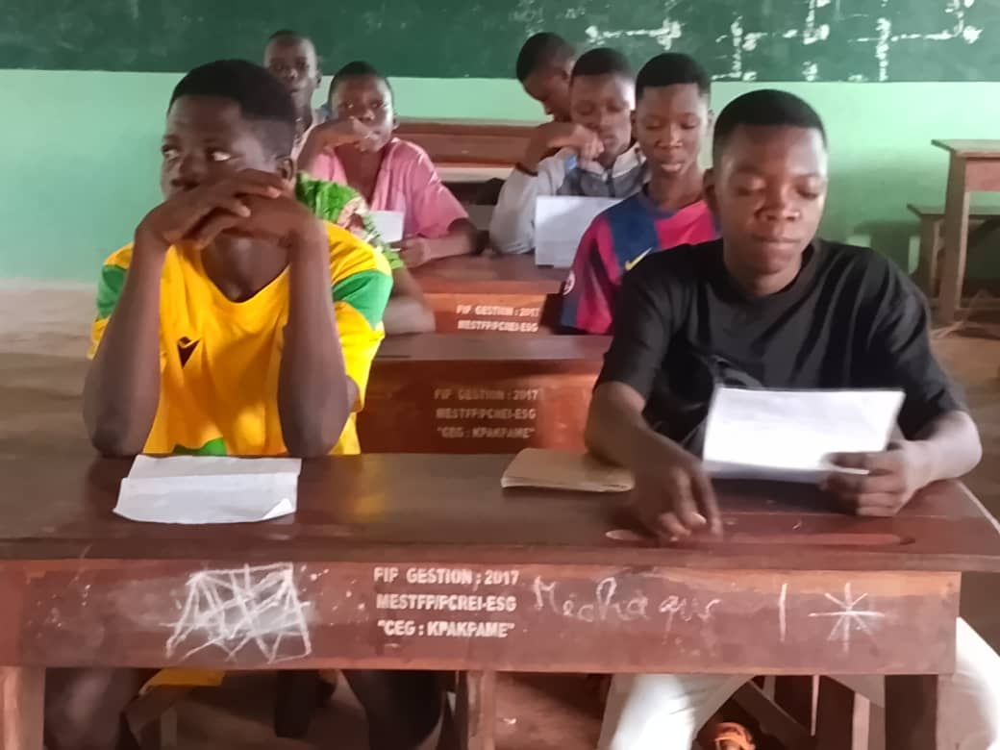

Rattrapage post-pandémie : Étude d'impact à Lagos Addressing Pandemic Learning Losses: Nigerian Case Study
Les résultats préliminaires de notre essai contrôlé randomisé (RCT) à Lagos révèlent des trajectoires de rétablissement extrêmement prometteuses grâce à des programmes de soutien scolaire après la classe ciblés. Ces interventions ont été conçues pour combler de manière agressive les écarts d'apprentissage accumulés à la suite de la pandémie de COVID-19, avec un accent particulier mis sur les mathématiques fondamentales et la littératie dans les écoles publiques primaires.
En ciblant spécifiquement les élèves des établissements scolaires vulnérables, ce projet met en lumière l'importance cruciale de l'alignement pédagogique et du suivi individualisé des élèves en difficulté. Les données empiriques collectées apportent des preuves solides pour guider les décideurs et concevoir des politiques éducatives résilientes face aux crises futures en Afrique de l'Ouest.
Preliminary results from our randomized controlled trial (RCT) in Lagos show highly promising recovery patterns through targeted after-school tutoring programs. These interventions were carefully designed to aggressively bridge the cumulative learning gaps caused by the COVID-19 pandemic, focusing specifically on foundational mathematics and literacy in public primary schools.
By focusing on students in vulnerable public schools, this project highlights the critical role of pedagogical alignment and individualized follow-up for struggling students. The empirical evidence gathered provides robust guidelines for policy makers, laying the groundwork for resilient educational systems across West Africa.
Indicateurs clés de récupération Key Recovery Metrics
28%
Rattrapage en Math Math Recovery
35%
Progrès en Littératie Literacy Improvement
18%
Hausse de Présence Attendance Increase
Méthodologie Scientifique Scientific Methodology

Essai Contrôlé Randomisé (RCT) Randomized Controlled Trial
Sélection aléatoire de 120 écoles publiques réparties en groupes de traitement et de contrôle. Random selection of 120 public schools divided into treatment and control arms.
Évaluations Rigoureuses Rigorous Student Assessments
Tests standardisés de base (EGRA/EGMA) administrés avant et après l'intervention scolaire. Foundational standardized tests (EGRA/EGMA) administered pre- and post-intervention.
Enquêtes Parentales & Enseignants Teacher & Parent Surveys
Suivi approfondi de la motivation des enseignants et du soutien à domicile fourni par les parents. Deep monitoring of teacher motivation and home-based support provided by parents.
Ressources & Publications Research Materials

Dr. Adeniran Adeyemi
Chercheur Principal Lead Researcher
Expert en économie de l'éducation. Ses recherches se concentrent sur la modélisation statistique de l'apprentissage en Afrique subsaharienne. Lead researcher and education economics expert. His work focuses on statistical modeling of student learning outcomes in Sub-Saharan Africa.